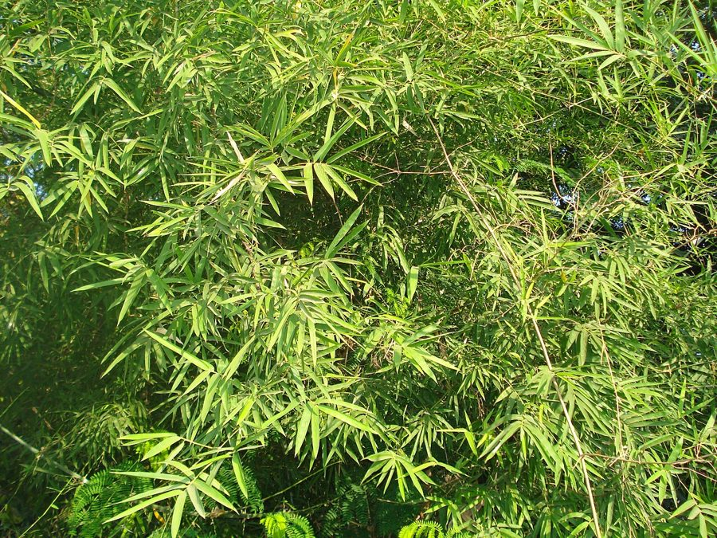

बाँसSolid Bamboo
Dendrocalamus strictus · Poaceae · FLR-0105

- Scientific name
- Dendrocalamus strictus (Roxb.) Nees
- Family
- Poaceae
- Hindi
- बाँस
- Status here
- native
- IUCN
- not evaluated
- Review
- audited and independently read
When to look कब देखें
Present all year.
Uses and possibilities उपयोग और संभावनाएँ
Guide: Munja: rope, baskets and mats
“Traditional medicine” means a documented traditional use, not a claim that it works. Nothing on this page is medical advice.
Drawn from the documented uses in the profile below, where each is labelled traditional, current or a research lead. All uses →
बाँस / Solid Bamboo
Dendrocalamus strictus (Roxb.) Nees — Poaceae
बाँस — गाँव का सबसे काम का पौधा, और पेड़ नहीं, घास है। एक झुंड से हर साल नए, मोटे, सीधे डंडे निकलते हैं जो छत, बाड़, टोकरी, सीढ़ी, खाट, लाठी — सबमें लगते हैं। यह भारत का सबसे फैला हुआ बाँस है, जिसका डंडा अंदर से ठोस या लगभग ठोस होता है। दशकों में एक बार पूरा झुंड फूलता है और फिर मर जाता है।
Quick Identification त्वरित पहचान
| Feature | Description |
|---|---|
| Habit | Dense clump of 20–100 upright canes (culms) from a tight base, 8–16 m tall |
| Culm | 2.5–8 cm thick, pale green turning yellowish, nodes slightly swollen; solid or nearly solid in dry sites, thin-walled hollow in moist ones |
| Branches | Many from each node in the upper half; the lower nodes bare or with short branches |
| Leaves | Narrow, 7–25 cm × 1–3 cm, rough above, on short stalks; a small sheath at each |
| New shoots | Stout, conical, covered in tawny-haired sheaths, July–September |
| Flowers | Rare: dense round heads of spikelets along leafless branches, once in 25–45 years, then the clump dies |
| The test | Cut a culm: it is solid or has only a narrow cavity |
Field tip: The bamboo of almost every village in the district, in tight clumps by the house, the pond or the field corner. Confirm it by the thick culm with little or no hollow, which is why it makes the best lathi. The larger thin-walled, hollow bamboos sometimes planted for poles are other species.
हिंदी — कैसे पहचानें: घर या तालाब के पास घना झुंड; डंडा मोटा, पीला-हरा, अंदर ठोस या थोड़ा ही खोखला; बरसात में मोटे, बालदार नए अंकुर। काटकर देखिए — भरा हुआ डंडा हो तो यही है।
Morphology आकारिकी
Biometrics (plains and dry-forest clumps, northern India):
| Measurement | Range |
|---|---|
| Culm height | 8–16 m |
| Culm diameter | 2.5–8 cm |
| Internode length | 30–45 cm |
| Culm wall | solid, or hollow with a cavity under a third of the diameter |
| Leaf blade | 7–25 × 1–3 cm |
| Clump | 20–100 culms, 2–4 m across at the base |
Rhizome and clump: A pachymorph (clump-forming) rhizome; each year's shoots rise beside the old, so the clump widens slowly rather than running across the field, which is why it can be kept at a boundary.
Culm: Straight, with a slight zigzag in some, glaucous when young. The wall is thick, and in dry conditions the internodes fill completely, giving a cane of exceptional strength for its size.
Culm sheaths: Stiff, covered with golden-brown hairs, falling as the culm hardens; the sheath blade small and triangular.
Leaves: Linear-lanceolate, hairy beneath when young, with a short false petiole; shed in the hot season on dry sites.
Flowers and seed: The whole clump, and often every clump of the same seed cohort across a region, flowers at once after decades, sets a heavy crop of grain-like seed, and dies. The seed is eaten and germinates readily, and the stands regenerate from it.
हिंदी: झुंड की जड़ गाँठदार होती है, फैलती नहीं; हर साल पुराने डंडों के बगल में नए निकलते हैं। डंडा मोटी दीवार वाला, सूखी जगह पर पूरा ठोस। फूल दशकों में एक बार, फिर पूरा झुंड सूख जाता है और बीज से नया उगता है।
Behaviour & Ecology व्यवहार और पारिस्थितिकी
A grass that behaves like a tree. Growth is explosive in the monsoon: a new shoot can reach full height in two to three months and hardens over the following two years. The clump is a structure in itself, giving nesting and roosting cover to House Sparrow, Baya Weaver, babblers and doves, shelter to Small Indian Mongoose and rats at the base, and a thick litter that holds moisture.
Native to the dry deciduous forests of peninsular and central India and the sub-Himalayan tract, it has been planted on homesteads across the plain for centuries. It tolerates poor, rocky and dry soil, dislikes waterlogging, and comes back from fire by sprouting from the rhizome.
The gregarious flowering, synchronised across clumps of one seed generation, is one of the famous events of Indian forestry: a region's bamboo flowers, seeds, dies and is replaced within a few years, with a surge of rodents feeding on the seed.
हिंदी: बरसात में नया अंकुर दो-तीन महीने में पूरी ऊँचाई पा लेता है। झुंड में गौरैया, बया और पंडुक घोंसला बनाते हैं, नीचे नेवला छिपता है। सूखी और पथरीली ज़मीन सह लेता है, पानी भरना नहीं। पूरे इलाके का बाँस एक साथ फूलता है, बीज देता है और मर जाता है — तब चूहे बहुत बढ़ जाते हैं।
Life Cycle / Phenology जीवन चक्र
| Month / season | Event |
|---|---|
| July–September | New shoots emerge and shoot up |
| October–December | Shoots finish growing; sheaths fall |
| March–May | Partial leaf fall on dry sites |
| Years 2–3 | Culm hardens; ready to cut |
| Once in 25–45 years | Clump flowers, seeds and dies; seedlings replace it |
Seed germinates within a week or two of the rains; a seedling clump gives usable culms in five to six years. Clumps are also raised from offsets and culm cuttings.
हिंदी: अंकुर बरसात में, डंडा दो-तीन साल में पक्का। बीज से झुंड पाँच-छह साल में काम लायक।
Associated Species / Interactions संबंधित प्रजातियाँ
- Nesting and roosting birds: House Sparrow, Baya Weaver, Rose-ringed Parakeet on the outer culms, doves within.
- Ground dwellers: Small Indian Mongoose and rats in the litter at the base; Mound-building Termite in dead culms.
- Companions: planted beside Mango, Neem and Indian Jujube on the homestead; the clump often marks the field corner with Babool.
Pests and Diseases कीट और रोग
- Bamboo borer beetles (Dinoderus species) riddle felled culms within months unless they are seasoned, soaked or treated; the main loss in use.
- Termites (Mound-building Termite) consume culms in contact with soil; a reason for stone or brick footings under bamboo posts.
- Rodents eat seed and young shoots in flowering years.
- Leaf rust and blight on seedlings; a culm-rot fungus in old waterlogged clumps.
Agricultural / Human Relevance कृषि प्रासंगिकता
Traditional and Ethnobotanical Use (documented uses; not medical advice):
- Structure. Rafters, purlins, roof battens, scaffolding, ladders, fencing, cattle sheds, the frame of the chhappar and the machaan. The solid culm is the preferred lathi and walking staff, and makes cart yokes, tool handles and well-sweep poles.
- Basketry and weaving. Split and woven into tokri, daliya, soop (winnowing fans), grain bins, chick blinds and mats. The craft is still alive in the district among the Dharkar and Bansphor communities, and is the most direct link between this plant and a livelihood.
- Food. The young shoot (karail) is cut in the monsoon, sliced, soaked to remove bitterness and cooked or pickled.
- Paper and pulp. This species was the mainstay of Indian paper mills through the twentieth century.
- Fodder and fuel. Leaves lopped for cattle in scarcity; dead culms and branches burned.
- Traditional medicine. The siliceous secretion from the hollow (banslochan, "bamboo manna"), when it occurs, is a classical Ayurvedic ingredient; leaf decoctions are recorded in Kirtikar & Basu.
Today. A planted clump supplies a household's own poles and baskets; surplus culms sell in every market. The National Bamboo Mission and state schemes have pushed plantation and small industry since 2006, with mixed results.
Research direction (a lead, not a result). Treated bamboo as a low-carbon building material, bamboo-based board and composite, and bamboo charcoal and biochar are active research areas in India, with pilot plants and standards (the Bureau of Indian Standards has codes for structural bamboo). For Basti the open question is scale: a village-level treatment and splitting unit against the price of untreated culms.
हिंदी: बाँस छत, बाड़, सीढ़ी, लाठी, टोकरी, सूप, मचान — सबमें लगता है। बाँस बुनने का हुनर ज़िले में अब भी ज़िंदा है और यही इस पौधे से रोज़गार का सीधा रास्ता है। बरसात का कोमल अंकुर (करैल) सब्ज़ी और अचार में खाया जाता है। उपचारित बाँस से घर बनाने और बाँस के कोयले पर शोध चल रहा है।
Expected Locally स्थानीय रूप से अपेक्षित
Not a field record. Written from published accounts for eastern Uttar Pradesh. No confirmed local sighting yet — if you have seen it, that is what the atlas needs.
अभी तक स्थानीय पुष्टि नहीं। यह विवरण प्रकाशित स्रोतों से है, किसी अवलोकन से नहीं।
Planted clumps are to be expected in nearly every village of the district, by houses, ponds and field corners, and bamboo basketry is a living trade in the region. Which species each clump is, and whether any clump has flowered in living memory, are exactly the records that do not yet exist.
Distribution वितरण
Global range: India, Nepal, Bangladesh, Myanmar and Thailand; introduced elsewhere in the tropics.
In India: The most widespread bamboo of the country, wild in the dry and moist deciduous forests of central and peninsular India and the Himalayan foothills to about 1,000 m; planted everywhere.
In Uttar Pradesh: Wild in the Vindhyan and tarai forests; planted across the plain.
In Basti district / eastern UP: Expected as homestead and boundary clumps; no natural forest stands.
Research Questions शोध प्रश्न
Anyone can investigate these | कोई भी इन प्रश्नों की जाँच कर सकता है
- How many bamboo clumps are in your village, and which are solid-culmed? / आपके गाँव में कितने बाँस के झुंड हैं, और कितने ठोस डंडे वाले? — Count them and cut-test one culm per clump with the owner's leave.
- Who still weaves bamboo here, and what do they make? / यहाँ अब भी बाँस कौन बुनता है, और क्या बनाता है? — Visit the weavers; list the products and their prices.
- Which birds nest in a clump? — Watch one clump through April and May from a distance.
- Has any clump flowered in living memory? / क्या किसी को याद है कि बाँस कब फूला था? — Ask the oldest residents; a date would be a real record.
- How long does an untreated bamboo post last in the ground here? — Ask owners of sheds and fences; note soil and whether the post sits on brick.
Similar Species मिलती-जुलती प्रजातियाँ
| Species | How to tell apart | हिंदी |
|---|---|---|
| Giant thorny bamboo (Bambusa bambos) | Much larger, culms hollow and thick-walled, lower branches armed with curved thorns | बहुत बड़ा, खोखला, काँटेदार |
| Common hollow bamboo (Bambusa vulgaris) | Yellow or green-striped hollow culms, thin walls, no thorns; an introduced ornamental | खोखला, कभी-कभी धारीदार |
| Munja Grass (Saccharum munja) | A tall grass, not woody; stems slender and pithy with a silvery plume | पतला, मुलायम डंठल, झाड़ूदार फूल |
Field rule: A clump of straight, thick, pale canes that are solid when cut and have no thorns is the common village bamboo; thorns or a wide hollow mean another species.
Taxonomy & Classification वर्गीकरण
Original description. Described by William Roxburgh in 1798 as Bambusa stricta in Plants of the Coast of Coromandel 1: 58, t. 80, from material grown in Calcutta. Transferred to Dendrocalamus by Nees von Esenbeck in 1834 (Linnaea 9: 476). The epithet means "upright".
Subspecies. Monotypic — no subspecies are currently recognised, though culm form varies greatly with site, from solid on dry ground to thin-walled hollow in moist shade.
Family and order placement. Poaceae, subfamily Bambusoideae, tribe Bambuseae; order Poales. Dendrocalamus ("tree reed") holds about 50 large clumping bamboos of tropical Asia.
Phylogenetic notes. Molecular studies place Dendrocalamus close to Bambusa within the paleotropical woody bamboos; the boundaries between the two genera are not fully resolved.
IUCN status rationale. Not evaluated. Abundant in the wild and in cultivation across its range.
Photo Gallery फोटो गैलरी
Photos needed आवश्यक फोटो
- [ ] A village clump with house or pond (झुंड)
- [ ] New shoot with hairy sheath, August (नया अंकुर)
- [ ] Cut culm end showing the solid centre (कटा डंडा)
- [ ] A weaver at work and the baskets (बुनाई)
Atlas Connections संबंधित प्रजातियाँ
- Munja Grass — the other giant grass of the district, woven for rope and baskets
- Baya Weaver — hangs its nests from bamboo and palm fronds
- Mound-building Termite — consumes culms in contact with soil
- Small Indian Mongoose — shelters in the litter at the base of a clump
References संदर्भ
- Roxburgh, W. (1798). Plants of the Coast of Coromandel, vol. 1, p. 58, t. 80. Bulmer, London. [original description, as Bambusa stricta]
- Nees von Esenbeck, C.G. (1834). Bambuseae brasilienses. Linnaea 9: 476. [transfer to Dendrocalamus]
- Gamble, J.S. (1896). The Bambuseae of British India. Annals of the Royal Botanic Garden, Calcutta 7: 1–133.
- Hooker, J.D. (1897). The Flora of British India, vol. 7. L. Reeve, London.
- Tewari, D.N. (1992). A Monograph on Bamboo. International Book Distributors, Dehradun.
- Council of Scientific and Industrial Research (1952). The Wealth of India: Raw Materials, vol. 3 (D–E). CSIR, New Delhi.
- Kirtikar, K.R. & Basu, B.D. (1935). Indian Medicinal Plants, 2nd ed., vol. 4. Lalit Mohan Basu, Allahabad.
- GBIF Occurrence Data — Dendrocalamus strictus, India (2026).
Source file: species/flora/trees/bamboo.md